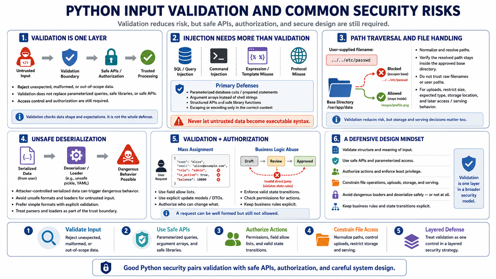

Preventing Common Python Security Issues
Connecting to LMS... Progress: in progress

Narration
Input validation helps reduce common Python security issues, but it must be paired with safe APIs and authorization. Injection risk appears when untrusted data is interpreted as part of a query, command, expression, template, or protocol. Validation can reject unexpected input, but parameterized database calls, safe library functions, and structured APIs are still required.
Path traversal happens when input influences file paths outside intended directories. A safe design normalizes and resolves paths, checks that the result stays inside an approved base directory, and avoids trusting raw filenames. File upload handling should also restrict size, type, storage location, and later access. Validation reduces risk, but storage and serving decisions matter too.
Unsafe deserialization is risky because attacker-controlled data may be processed in dangerous ways by a deserializer. Avoid unsafe formats and loaders for untrusted input, and prefer simple data formats with explicit validation. Command injection risk should be handled by avoiding shell interpretation where possible, using argument arrays or safe APIs, and validating values against narrow expectations.
Mass assignment and business logic abuse show that validation is not only about syntax. A request may be valid JSON but still contain fields the user should not control. A workflow step may be well formed but not allowed in the current state. Python applications should pair validation with authorization, field allow lists, explicit update models, and safe state transitions. Validation is one layer in a larger defensive design.